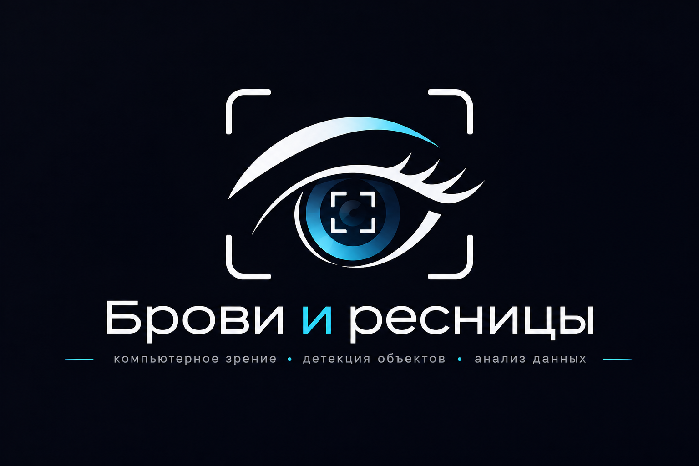

P-102 · ДЕМО
Центробежный насос Д 160-1126
- Узлы осмотра
- Уплотнение, подшипник, муфта, трубопровод
- Интервалы ТО
- 4 000 / 8 000 / 16 000 моточасов
- Остаточный ресурс
- Недостаточно данных

Макет · демонстрационные данные
P-102 · ДЕМО
Пример того, как приложение показывает ответ модели.

ПРЕДВАРИТЕЛЬНОЕ НАБЛЮДЕНИЕ · ДЕМО
Видимые признаки коррозии.
Рекомендация
Осмотреть поверхность узла при хорошем освещении и зафиксировать состояние покрытия.
P-102 · Демонстрационный сценарий
Записи текущего сеанса макета.
Записей пока нет.